更新档案Update archive
最近更新Latest updates
不是只有六条。这里收全站 57 条更新，按日期倒序；有可靠实图就放作品的真实缩略图，没有就只留文字。Not just six. All 57 updates across the sites, newest first; a real work thumbnail when one exists, plain text when it does not.
57 条更新entries
10 个月份months
19 张真实作品图real work images
57 条可见；图片只来自真实作品缩略图，不用统一生成的封面。visible; images are real work thumbnails, never uniform generated covers.
2026 年 11 月November 2026
31 条items
三条新视频演示：数字人长视频、480B 音画、30 秒 FlashThree new video demos: long-form avatar, 480B audio-video, 30-second Flash这轮不新增站内 HTML 作品，只补官方演示入口：LongCat-Video-Avatar 1.6 看 10 分钟以上的身份与口型稳定；MAGI-2 看 30 秒 1080p 的原生对白、音效与环境声；Seedance 2.5 Flash 看 30 秒多参考、时间戳编辑和 720P 的成本档。This round adds no hosted HTML pieces, only official demo entries: LongCat-Video-Avatar 1.6 for identity and lip stability beyond ten minutes;
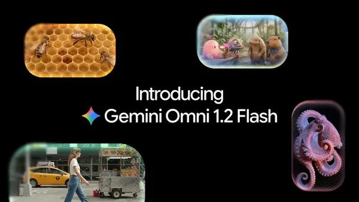
威云 1000Pro / 1000Ultra：单机 800B / 3.2TWeiyun 1000Pro / 1000Ultra: 800B / 3.2T on one machine官方产品页已可核验：1000Pro 选配 GPU 后最高 13 PFLOPS、1.28 TB 显存、推理功耗低于 1 kW、2U，单机最高 800B 全参数；1000Ultra 最高 47.5 PFLOPS、4.66 TB 显存、8U/12U，单机最高 3.2T。价格与交付未公布，媒体报价不写入。Official product pages are live: 1000Pro reaches up to 13 PFLOPS with optional GPUs, 1.28 TB memory, under 1 kW inference power, 2U, up to 800B parame… 全站去旧换新复核Site-wide stale-claim reviewOpal 停用、Hy4 许可与定价、Kimi K3.1 Pro 权重三处口径修正；历史页保留，只改不再成立的判断。Retired Opal, corrected the Hy4 licence and pricing and the Kimi K3.1 Pro weights; kept the history and changed only claims that no longer hold. 文心 5.5 Flash Preview：280B / 14B 激活，Apache-2.0ERNIE 5.5 Flash Preview: 280B / 14B active, Apache-2.0百度在 11-25 公开预览版权重：280B 总参、14B 每 token 激活，512 路由专家 / top-10 + 1 共享，1,048,576 token 上下文，文本输入输出；块级 FP8 + 路由专家 MXFP4，带 DSpark 投机解码，权重 Apache-2.0。Baidu published preview weights on 25 November: 280B total, 14B active per token, 512 routed experts with top-10 plus one shared, a 1,048,576-token co… 时间列表统一 + 七类补更Timeline order unified + seven content updates全站时间线改为最新在上；补 GLM-5.4、Hy4、Claude Ship、Genie 4、PFN L2000、两篇论文、LoopForge 与 Algorand x402。All timelines now run newest-first; added GLM-5.4, Hy4, Claude Ship, Genie 4, PFN L2000, two papers, LoopForge and Algorand x402. MAGI-2：480B 视频模型，30 秒 1080p 原生音画MAGI-2: a 480B video model with 30-second 1080p native audio-videoSand.ai 发布 480B 旗舰视频模型：480B 总参、约 28B 激活，预训练数据约 4T token；单次生成 30 秒 1080p / 25fps 原生音视频，最多 20 个参考（10 图 + 5 视频 + 5 音频），六种画幅、时间线控制与视频编辑。Sand.ai launched a 480B flagship video model: 480B total, about 28B active, roughly 4T pre-training tokens. Seedance 2.5 Flash：30 秒、多参考、价格降约 34%Seedance 2.5 Flash: 30 seconds, multi-reference, about 34% cheaper火山方舟 11-24 文档确认 2.5 Flash 全面开放：单段 30 秒，480P / 720P，最多 10 图 + 5 视频 + 5 音频，支持时间戳编辑、视频延长和 10 余种语言；官方称比 2.5 快约 2 倍、价格低约 34%。按 token 计费，不是固定按条。Volcano Ark’s 24 November docs confirm Seedance 2.5 Flash is generally available: 30-second clips, 480p/720p, up to 10 images + 5 videos + 5 audio cli… Algorand x402：原子交易 + 赞助交易Algorand x402: atomic and sponsored transactionsAlgorand 把 x402 的支持从 2 月的技术接入推进到原子交易与赞助交易：多个动作可作为一组交易同时成功或同时失败；facilitator / 服务方可以代付网络费，实现 gasless 支付流。x402 用 CAIP-2 标识网络，Algorand 主网 USDC 为默认资产之一。Algorand has extended its x402 support from the February technical integration to atomic and sponsored transactions: multiple actions settle together… Claude Ship：让 Agent 审 PR、修问题、批准合并Claude Ship: agents review, fix and approve PRsAnthropic 把代码交付拆成三个 Agent：Code Review 已 GA，逐行读变更并做对抗性复核；PR Steward 处理失败 CI、合并冲突与 review 反馈，每次推送都写清改了什么、怎么回滚；Anthropic splits code delivery into three agents: Code Review is GA and reads changes in context with adversarial verification; GLM-5.4：首个 Loop Transformer 旗舰GLM-5.4: the first Loop Transformer flagship智谱把 750B 基座的 28 层循环跑两遍，用重复计算换推理深度，而不增加参数；官方称智能水平达到 2–3T 级模型。原生多模态与「泛 Coding」是主场景：编程之外还覆盖视频创作、游戏开发与 3D 建模。2026-11-23 发布，API 与开源权重尚未放出。Z.ai runs 28 layers of its 750B base through two loops, trading repeated compute for reasoning depth without adding parameters;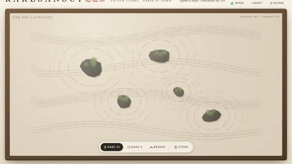
Ling-3.2-air：124B / 5.5B 激活，256K 多模态Ling-3.2-air: 124B / 5.5B active, 256K multimodal蚂蚁 inclusionAI 上线 Ling-3.2-air：124B 总参、5.5B 每 token 激活，35 层 KDA + 7 层 Gated MLA，512 路由专家 / 8 激活，256K 上下文，文本 + 图像 + 视频输入，MIT 许可。Ant’s inclusionAI released Ling-3.2-air: 124B total, 5.5B active per token, 35 KDA layers plus 7 gated MLA layers, 512 routed experts with 8 active, 2… 腾讯 Hy4：770B / 49B 激活正式开源Tencent Hy4: 770B / 49B active, weights openHy4 于 2026-11-04 发布、11-20 正式开源：770B 总参、49B 每 token 激活的 MoE，上下文超过 100 万 token，首次加入视觉理解；Hy4 was announced 2026-11-04 and open-sourced 2026-11-20: a 770B-total, 49B-active MoE with over one million tokens of context and first-time visual u…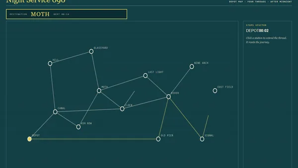
Inkling 2 Mini：26.4B MoE / 3.4B 激活Inkling 2 Mini: 26.4B MoE / 3.4B activeThinking Machines Lab 的本地多模态节点：26.4B 总参、3.4B 激活（循环层带来约 5.4B 有效），24 层 looped MoE，1M 上下文，文本 + 图像输入，Apache-2.0。Thinking Machines Lab’s local multimodal node: 26.4B total, 3.4B active (about 5.4B effective through looping), a 24-layer looped MoE, 1M context, tex… OSS 分站与四个站内节OSS site + four in-site sections开源库独立成站：136 个仓库、7 个场景；数据、评测、云算力与 Skills 分进各站。OSS became its own site: 136 repositories and 7 scenes; data, evals, cloud compute and Skills moved into their own sections. Edit-based training：只教第一个失败点Edit-based training: supervise only the first failure不再让模型模仿整条推理轨迹，也不只给整条轨迹一个奖励：编辑器先找出「第一个不符合要求的点」，只对最小替换片段做监督。方法可离线也可在线，在线时监督会跟着模型当前失败模式移动。作者在 Qwen3-32B 上用 ReasonIF 验证。Instead of imitating a full reasoning trajectory or rewarding the whole completion, an editor locates the first point of failure and supervises only a… Replit Missions：给一群 Agent 一个目标Replit Missions: give an agent swarm a goal你定义结果、预算与边界，Missions 组织一组 Agent 规划、构建、测试并迭代。官方示例让 swarm 在两天、3,000 美元预算内搭出监控平台 DataCat；在 E-Commerce Bench 上把 10 万日元做到 482 万，约为起始资金的 48 倍。You define the outcome, budget and boundaries; Missions coordinates a swarm of agents to plan, build, test and iterate. 本站可视化与 2026 增补New visualizations + 2026 pages九个首页数据图、八个 2026 增补页、十个 404；首页把「直接用 / 自己搭」分开。Nine homepage charts, eight 2026 supplement pages and ten 404 pages; the homepage separates 'use directly' from 'build your own'. Genie 4：在浏览器里实时改一个世界Genie 4: edit a world live in the browserGoogle DeepMind 把 Genie 4 开放给符合条件的 Google AI Ultra 订阅者：用自然语言在运行中的世界里改天气、加角色、改镜头；首次带原生音频；Project Genie agent 用对话搭世界，社区画廊可发布与 remix。只链官方页，不复制视频。Google DeepMind opened Genie 4 to eligible Google AI Ultra subscribers: change weather, add characters or move the camera in a running world with natu…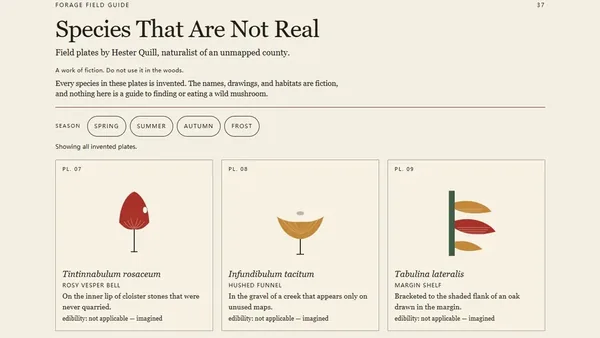
LLM 会把预测目标建对吗？Do LLMs formulate the right prediction target?论文考察 LLM 在儿童福利、医疗、就业等高风险评估里能否正确构造预测问题，重点是「决策依赖」：历史决策会影响被观察到的结果。作者测试 11 个 OpenAI / Anthropic 模型、7 种提示条件，检查生成代码与解释是否处理这一偏差。The paper asks whether LLMs correctly formulate prediction problems in child welfare, healthcare and employment, focusing on decision dependency: past… PFN MN-Core L2000：内存带宽目标翻倍PFN MN-Core L2000: targeting double the memory bandwidthPFN 与 SEMIFIVE 合作开发下一代 AI 推理芯片 L2000 系列，目标是内存带宽超过 L1000 的两倍；延续 3D 堆叠逻辑芯片 + DRAM 的路线，计划 2027Q1 tape-out。它不是已上市产品，L1000 本身也计划 2027 年才发售。PFN and SEMIFIVE are co-developing the L2000 series, the next generation of AI inference chips, targeting more than twice the memory bandwidth of L100… LongCat-Video-Avatar 1.6：10 分钟以上、MIT 权重LongCat-Video-Avatar 1.6: 10+ minutes, MIT weights美团 LongCat 放出 1.6 权重：音频驱动单/多人数字人，支持语音 + 文本/图生视频与视频续写；官方称可稳定生成超过 10 分钟，缓解自回归长视频的误差累积；MIT 权重，示例命令 2 张 GPU 起跑，支持 INT8/FP8 与 FA3。Meituan LongCat released 1.6 weights: audio-driven single- and multi-person avatars, speech + text/image-to-video and video continuation. Axelera Titania：2.5 PF FP8 / 128GB LPDDR6Axelera Titania: 2.5 PF FP8 / 128GB LPDDR6数据中心级 AIPU：两个第三代 D-IMC 计算芯粒组成一个 SiP，400W，FP8 2.5 PFLOPS；128GB LPDDR6、2.45TB/s、128MB 共享 SRAM；32 个 RISC-V 核与多格式编解码器。官方目标 2027Q3 量产，已获超 3 亿美元订单。A datacenter-class AIPU: two third-generation D-IMC chiplets in one SiP, 400W, 2.5 PFLOPS FP8; 128GB LPDDR6 at 2.45TB/s with 128MB shared SRAM; AMD MI450X：288GB HBM4 / 23.3TB/sAMD MI450X: 288GB HBM4 / 23.3TB/s与 MI455X 同为 CDNA5、同为 23.3TB/s，但容量为 288GB（8 个 HBM4 stack）；MXFP4 40.3 PFLOPS；2026-11-12 上市。Same CDNA5 and 23.3TB/s as MI455X, but 288GB (eight HBM4 stacks); MXFP4 40.3 PFLOPS; launched 2026-11-12. Nous Arete-27B：Qwen3.8-27B 的 Apache-2.0 再调Nous Arete-27B: an Apache-2.0 retune of Qwen3.8-27B不是新架构，也不叫「17B」：它是 Qwen3.8-27B 的 27B 稠密 SFT，视觉编码器冻结，训练约 5,280 万 token、64k 上下文；权重、评测与训练数据公开，许可 Apache-2.0。社区 GGUF 在发布后很快出现。Not a new architecture, and not a “17B”: a 27B dense SFT of Qwen3.8-27B with a frozen vision encoder, trained on roughly 52.8M tokens at 64k context.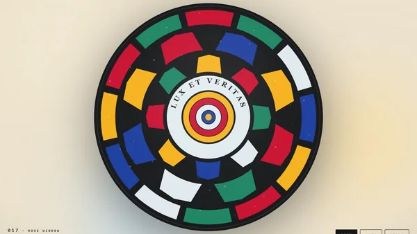
Inkling 2 Small：594B MoE / 17B 激活Inkling 2 Small: 594B MoE / 17B activeThinking Machines Lab 的 2026 旗舰开放权重：594B 总参、17B 每 token 激活，48 层 decoder-only，384 专家 / 8 激活，1M 上下文，文本 + 图像输入，Apache-2.0。Thinking Machines Lab’s 2026 open-weight flagship: 594B total, 17B active per token, 48 decoder-only layers, 384 experts with 8 active, 1M context, te… 七个模型各选 5 件：GLM-5.3、Qwen3.8-Max、MiniMax M3.1、Gemini 4 Argon、DeepSeek V4.1、Step 5、Ornith 1.5Five pieces each from seven models: GLM-5.3, Qwen3.8-Max, MiniMax M3.1, Gemini 4 Argon, DeepSeek V4.1, Step 5, Ornith 1.5从每个模型的 100 件单文件 HTML 里各选 5 件，共 35 件：工具与界面 5、内容与视觉 12、互动体验 8、数据可视化 10。覆盖仪表盘、潮汐/轨道图、磁流体与克拉尼板、N-body 沙盒、折纸与水墨，全部链回 GitHub Pages，不复制完整文件。Five self-contained HTML pieces from each of seven 100-piece collections, 35 in total: 5 tools/interfaces, 12 content/visual, 8 interaction, 10 data v…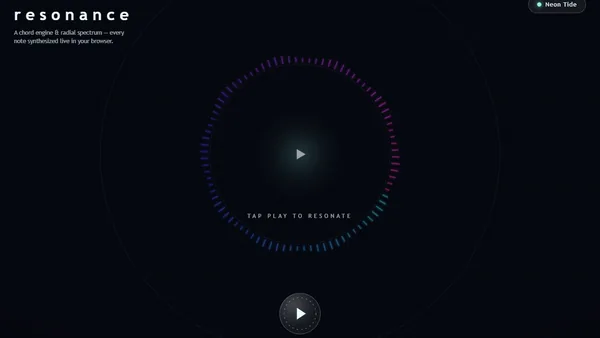
再补三个模型各 5 件：Claude Opus 5.5、GPT-6.2 Astra、Gemini 4 NeonFive more pieces each from Claude Opus 5.5, GPT-6.2 Astra and Gemini 4 Neon从三组同结构的 100 件单文件 HTML 里各选 5 件，共 15 件：内容与视觉 5、数据可视化 5、互动体验 3、工具与界面 1、教育 1。覆盖玻璃拟态落地页、黄铜太阳系仪、深海下潜、二十四节气、磁场实验、珍珠算盘、萤火虫应答、明信片邮戳、多重曝光、极光车窗、日晷、热液喷口、金缮、单摆波与双缝…Five pieces from each of three same-structure 100-piece single-file HTML collections, 15 in total: five content/visual, five data visualisation, three…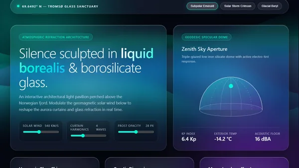
再补五个模型：GPT-6.1 Terra、Grok 4.7、Claude Haiku 5.5、MiMo V2.6 Pro、Hy4 flashFive more models: GPT-6.1 Terra, Grok 4.7, Claude Haiku 5.5, MiMo V2.6 Pro and Hy4 flash从四组此前完全缺席的 100 件单文件 HTML 里各选 5 件，再给 Hy4 flash 补 4 件，共 24 件：内容与视觉 8、互动体验 6、教育 4、工具与界面 3、数据可视化 3。Five pieces each from four 100-piece single-file HTML collections that were previously absent, plus four more from Hy4 flash: 24 in total — eight cont…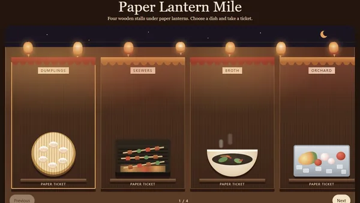
再补六个模型：GPT-6 Astra、Claude Fable 5.1、Claude Sonnet 5.5、Muse Spark 1.3、Ox Alpha、Qwen3.8-27BSix more models: GPT-6 Astra, Claude Fable 5.1, Claude Sonnet 5.5, Muse Spark 1.3, Ox Alpha and Qwen3.8-27B从六组此前未单列的 100 件单文件 HTML 里各选 5 件，共 30 件：内容与视觉 12、互动体验 8、教育 3、工具与界面 4、数据可视化 3。覆盖杂志封面、粗野主义作品集、灯会许愿、超立方体、字体实验、液态金属、等距城市、1926 年报纸头版、全息票、合成器、纯 CSS 灯塔、像素营火、瑞…Five pieces each from six previously unlisted 100-piece single-file HTML collections: 30 in total — twelve content/visual, eight interaction, three ed…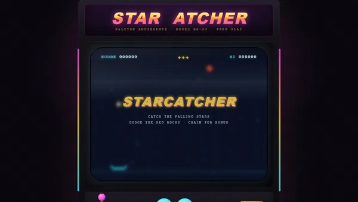
2026-11 新模型官方演示：3D、视频与办公2026-11 official model demos: 3D, video and workKimi K3.1 Pro 的 3D 创作与长程代码、Gemini Omni 1.2 Flash 的 15 秒视频与多轮编辑、Hy4 flash 的 150+ tok/s 办公任务。只链官方发布页，不复制图片或视频；三条都是厂商精选案例，不是同题横评。Kimi K3.1 Pro on 3D and long-horizon code, Gemini Omni 1.2 Flash on 15-second video and multi-turn editing, and Hy4 flash on 150+ tok/s everyday work.…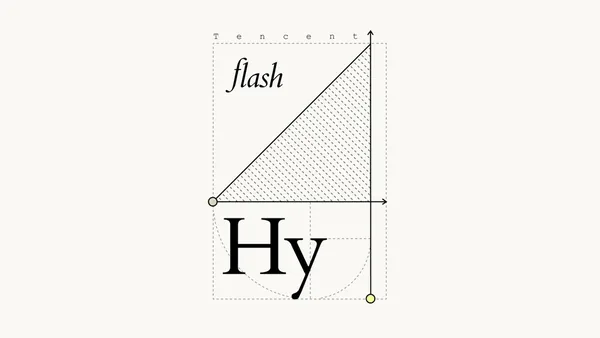
AG-UI 1.0：Agent 到用户的事件流AG-UI 1.0: an event stream from agent to user一条有序事件流，把 token、工具调用、共享状态与中断送到前端；HTTP + SSE，定义 RunAgentInput 与事件类型。One ordered event stream carrying tokens, tool calls, shared state and interrupts to the frontend; HTTP + SSE, with RunAgentInput and typed events.2026 年 10 月October 2026
5 条items
JEPA-PRH：109M 文本 JEPA 的跨模态对齐JEPA-PRH: cross-modal alignment from a 109M text JEPA一个 109M 参数的文本 JEPA，在跨模态对齐上优于作者评测过的所有语言模型（最大到 72B）；「好视角」比 next-token 少 42 倍训练样本。A 109M-parameter text JEPA aligns with image encoders better than every language model the authors evaluated, up to 72B;
Mistral Large 4：1.05T / 49B 激活Mistral Large 4: 1.05T total / 49B active欧洲开放权重旗舰。1T 级原生多模态 MoE，1M 上下文，128 路由专家（每 token 激活 4 个 + 1 共享），160+ 语言；官方称 3,800 张 Grace Blackwell 训练。A European open-weight flagship: 1T-class natively multimodal MoE, 1M context, 128 routed experts (4 active per token plus 1 shared), 160+ languages;
Agent Skills：一个文件夹就是一项能力Agent Skills: a folder is a capability2025-12 发布，2026-10-22 捐给 AAIF；用 SKILL.md + 脚本/资产描述一项可复用能力，按需加载，70+ 平台接入（厂商口径）。Released in December 2025 and donated to the AAIF on 2026-10-22; a reusable capability described by SKILL.md plus scripts/assets, loaded on demand, wi…
Meta Muse Spark Open：816B / 42B 激活Meta Muse Spark Open: 816B / 42B activeMeta 在 Muse 线上的新旗舰，面向多文件重构与长程调试的编程 Agent；816B 总参、42B 激活、1M 上下文、原生多模态，Muse Model License。A new flagship on Meta’s Muse line, aimed at coding agents doing multi-file refactoring and long debugging;
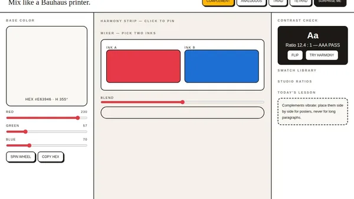
Byteification：把子词模型改成字节级Byteification: retrofitting subword models to bytes用不到典型预训练预算 1% 的 49.1B token，把一个已有子词 LLM 转成字节级；报告 Bolmo 7B/1B、Bwen 8B、Blama 8B 在字符级推理上超过早期字节级方法。Converts an existing subword LLM to byte level with 49.1B tokens, less than 1% of a typical pretraining budget;2026 年 9 月September 2026
2 条items
小米 MiMo-V2.6：Pro / Flash 双线Xiaomi MiMo-V2.6: Pro / Flash linePro / Flash 两条线同时发布并开源；Pro 在 AA Intelligence Index 46.32，1M 上下文，原生全模态（文本 / 图像 / 视频 / 音频），权重与技术报告开放。Pro and Flash launched together with open weights; Pro scores 46.32 on the AA Intelligence Index, with 1M context and native omni-modality (text / ima…
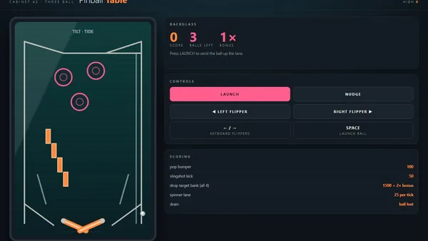
DeepSeek V4.1 Flash：552B MoE，KV 缓存大幅压缩DeepSeek V4.1 Flash: 552B MoE, much smaller KV cache552B MoE，Causal-Encoder-Decoder 架构；输入侧 8B 激活、输出侧 16B 激活；原生多模态；官方称 KV 缓存 HBM 占用降至 1/4、SSD 降至 1/8；权重 MIT。552B MoE with a causal encoder–decoder architecture; 8B active on the input side and 16B on the output side; native multimodality;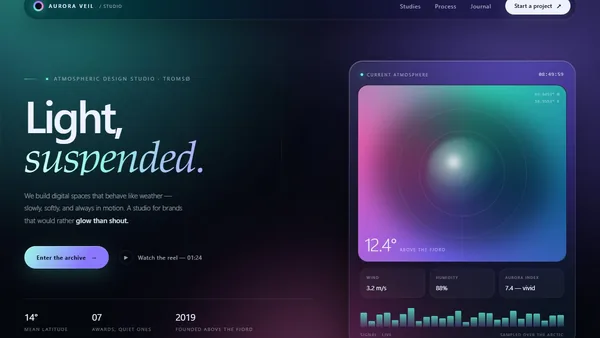
2026 年 8 月August 2026
1 条items2026 年 7 月July 2026
3 条items
MCP 下一版：无状态核心 + 扩展Next MCP: stateless core + extensions2026-07-28 规范候选把协议级 session 从核心移除，改为无状态请求；Extensions 与 Tasks 作为可选能力，降低水平扩展与多租户接入成本。The 2026-07-28 spec candidate removes protocol-level sessions from the core in favour of stateless requests;
Kimi K3：开放日校正为 2026-07-27Kimi K3: open-weights date corrected to 2026-07-27本站旧卡把 Kimi K3 的开放日写成 2026-06，官方页为 2026-07-27；2026-11 更新把家族卡与图表一起校正。规格不变：2.8T 总参 / 104B 激活，16/896 专家，1M 上下文，原生视觉。The older card dated Kimi K3 to June 2026; the official page says 2026-07-27. This round corrects the family card and the charts.
AMD MI455X：432GB HBM4 / 23.3TB/sAMD MI455X: 432GB HBM4 / 23.3TB/s单卡 432GB HBM4（12 stack）、23.3TB/s、320B 晶体管；OCP MXFP4 40.3 PFLOPS、FP8 20.1 PFLOPS；UALoE 3.6TB/s；DLC。Per GPU: 432GB HBM4 (12 stacks), 23.3TB/s, 320B transistors; OCP MXFP4 40.3 PFLOPS, FP8 20.1 PFLOPS; UALoE 3.6TB/s; direct liquid cooling.
2026 年 4 月April 2026
2 条items
AP2：v0.2 + 捐给 FIDO AllianceAP2: v0.2 and donation to the FIDO AllianceGoogle 把 Agent Payments Protocol 捐给 FIDO，同时发布 v0.2，新增 Human Not Present 自主支付；Checkout / Payment 两类 mandate，open / closed 两种，SD-JWT 签名。Google donated AP2 to FIDO and released v0.2 with Human Not Present autonomous payments;
Google TPU7x（Ironwood）：192GiB / 7.38TB/sGoogle TPU7x (Ironwood): 192GiB / 7.38TB/s第七代 TPU，单芯片 192GiB HBM3E、约 7.38TB/s、4614 TFLOPS FP8 / 2307 TFLOPS BF16；9,216 chips per pod；ICI 1.2TB/s；JAX / PyTorch 支持，TensorFlow 不支持。Seventh-generation TPU: 192GiB HBM3E per chip, about 7.38TB/s, 4614 TFLOPS FP8 / 2307 TFLOPS BF16; 9,216 chips per pod; ICI 1.2TB/s;
2026 年 1 月January 2026
2 条items
ERC-8004：Trustless Agents 上主网ERC-8004: Trustless Agents goes mainnet三套 singleton registry：Identity（ERC-721 + agent card JSON，含 A2A / MCP 端点）、Reputation、Validation；与 x402 支付集成；仍是 Draft，v2 在开发。Three singleton registries: Identity (ERC-721 + agent-card JSON with A2A / MCP endpoints), Reputation and Validation; integrates with x402 payments;
MCP Apps：工具可以返回一个界面MCP Apps: a tool can return a UISEP-1865 定稿：工具结果可以带 ui:// 资源，客户端在沙箱 iframe 里渲染，并通过 JSON-RPC 回传交互；必须保留文本回退。SEP-1865 is final: a tool result can carry a ui:// resource, the client renders it in a sandboxed iframe and receives interactions over JSON-RPC;
2026 年2026
9 条items
GPT-6.2 Sol：100 件 HTML 视觉研究GPT-6.2 Sol: 100 HTML visual studies同一模型、100 条题目产出的网页作品：互动 23、数据 27、内容 26、工具 14、模型演示 10。全部链回原发布页，未声明许可的完整文件不复制。One hundred web pieces from one model: interaction 23, data 27, content 26, tools 14, model demos 10.
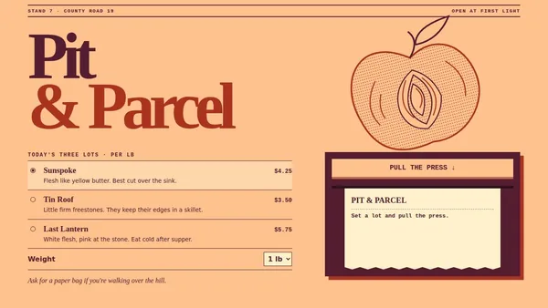
Claude Fable 5.2：86 件互动与视觉实验Claude Fable 5.2: 86 interaction and visual experiments86 件作品里互动体验 57、数据可视化 24、内容与视觉 2、工具与界面 3；这一组偏交互，适合看同一模型如何处理状态、动画与输入。Of 86 pieces, 57 are interaction, 24 data visualisation, two content/visual and three tools/interfaces;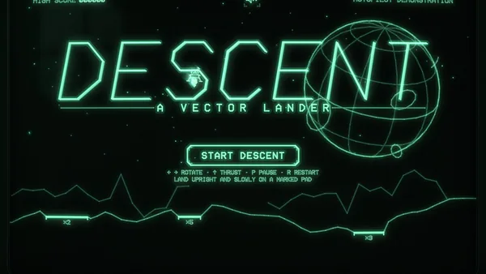
Claude Opus 5.5：B6 代码动画的单件样本Claude Opus 5.5: one B6 code-animation sample同一份 B6 提示词的 Claude Opus 5.5 版本。和 DeepSeek V4.1-Flash 版并排看实现差异；原仓库明确说明这不是受控模型对比。The Claude Opus 5.5 take on the same B6 prompt. Compare it with the DeepSeek V4.1-Flash version; DeepSeek V4.1-Flash：B6 与 X7 两件代码动画DeepSeek V4.1-Flash: B6 and X7 code animationsB6 与 Opus 共用同一份提示词；X7 只给一句话。两件都按 free-share 许可在站内直接运行。B6 shares its prompt with Opus; X7 came from a single line. Both run here under a free-share licence.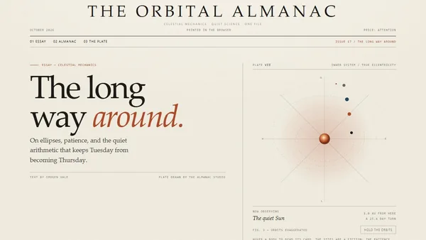
识别—拒答错位：知道不可答，却还是答了Recognition–refusal misalignment: knowing it is unanswerable, yet answering论文在隐藏状态里找到一条线性方向，能把可答与「结构上不可能」的数学/代码题分开；识别方向与安全拒答方向接近正交，因此把失败解释为路由问题，而不是编码问题。The paper finds a linear direction in hidden states separating answerable from structurally impossible math/code prompts; Abstain-R1：3B 模型的可校准弃答Abstain-R1: calibrated abstention at 3B用 clarification-aware RLVR 奖励训练 3B 模型，在不可答查询上同时改善弃答与澄清，并保持可答查询上的表现。Trains a 3B model with a clarification-aware RLVR reward, improving abstention and clarification on unanswerable queries while preserving answerable-q… NVIDIA Rubin：288GB HBM4 / 22TB/sNVIDIA Rubin: 288GB HBM4 / 22TB/s单卡 288GB HBM4（12-Hi stack）、22TB/s、336B 晶体管、224 SM / 896 Tensor Cores；NVFP4 推理最高 50 PFLOPS；NVLink 6 3.6TB/s。Per GPU: 288GB HBM4 (12-Hi stacks), 22TB/s, 336B transistors, 224 SM / 896 Tensor Cores; up to 50 PFLOPS NVFP4 inference; NVLink 6 at 3.6TB/s. NVIDIA B300：288GB HBM3e / 8TB/sNVIDIA B300: 288GB HBM3e / 8TB/sBlackwell Ultra 单卡：288GB HBM3e、8TB/s、15 PFLOPS dense NVFP4、160 SM / 640 Tensor Cores、最高 1400W。Blackwell Ultra per GPU: 288GB HBM3e, 8TB/s, 15 PFLOPS dense NVFP4, 160 SM / 640 Tensor Cores, up to 1,400W. AMD Helios：72× MI455X，31TB HBM4AMD Helios: 72× MI455X, 31TB HBM4机架级方案：72 张 MI455X 或 MI450X，31TB HBM4，1.4 EF FP8 / 2.9 EF FP4；不是单卡规格。Rack-scale system: 72 MI455X or MI450X GPUs, 31TB HBM4, 1.4 EF FP8 / 2.9 EF FP4; not a per-GPU spec.